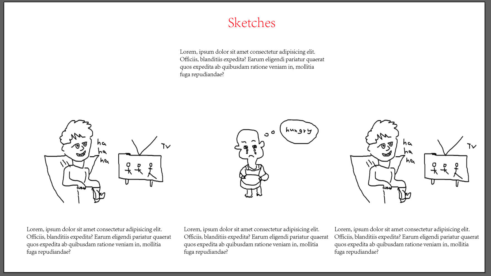
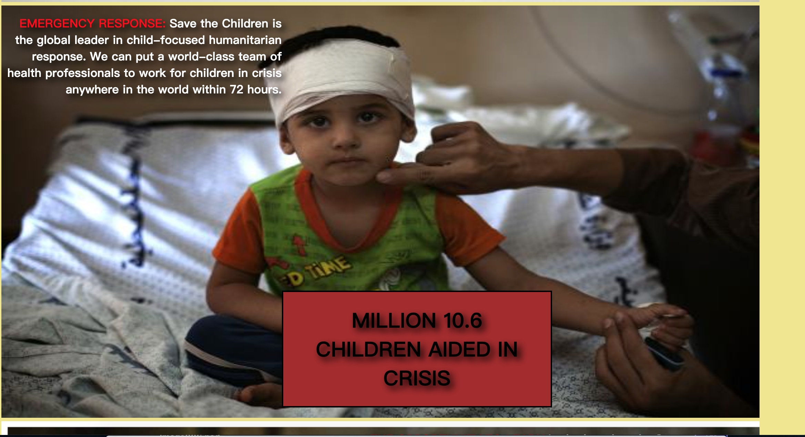

Reflection on Proposal
Homepage Mockup.
Home Page Prototype
Home Page Prototype
HomePage Design Reflection: Compare to my mockup homepage design, I've make a lot of changes in my final prototype website.My navigation bar has been set up at the top of the website which is a typical setting.I devided my navigation into four parts which include homepage, AboutUs, OfferHelp and Contact which make the whole website more clear.I add a footer in my prototype which I didn't have in my mockup.I add different colors to the navigation bar,background as well as the footer, the website looks more pretty and colorful. Simple inteoduction and donate button are include in the home page which letting people know the objective of the website, a relativelively colorful and friendly image is replaced with the black and white image. Social media links and email register are include in the footer.
Navigation Page Mockup.
Video Embbeded in AboutUs Page
Images Gallery
Organisation Program
Navigation Page Design Reflection: I didn't have a clear ideation and concept on what to put into the navigation page at the mockup stage.After re-consider and review all the material again, I decided to do a AboutUs page at the prototypy stage in order to provide more information（Embbeded Video,Image Gallery,Organisation Program information） about the organisation, therefore the users are able to understand further how does this organisation work.
Navigation Page Mockup.
Statistic
Achievement Statistic
Achievement Statistic
Navigation Page Design Reflection: For the second navigation page, I did a Offer Help page in order encourage people to make donation to achieve the objective of this website. By providing the statistics of different achievements in different program, it's more likely to persuade the user to donate since they can see how successfully is this organisation. Donate botton is place in the page for people to donate easier.The important information is highlighted with the red color.
Navigation Page Mockup.
Cover Photo
Allow People to Submit Details
Navigation Page Design Reflection: Compare to the Mockup stage, there wasn't a contact method for the user to contact the organisation. Thus,for the final navigation page, I chose to make a Contact page. The Contact page includes the contact details of the organisation, the user could also submit their information and suggestions for the organisation through filling out the form.This allow the organisation to take different kind of the advices and make improvement.
References
- (2020). Retrieved 26 November 2020, from https://www.savethechildren.org.au/about-us
- W3Schools Online Web Tutorials. (2020). Retrieved 26 November 2020, from https://www.w3schools.com/
- Access to education for refugee and migrant children in Europe - September 2019 - World. (2020). Retrieved 26 November 2020, from https://reliefweb.int/report/world/access-education-refugee-and-migrant-children-europe-september-2019
- 10 Reasons Why Thousands of People Use Mobile Spyware. (2020). Retrieved 26 November 2020, from https://bestcellphonespyapps.com/10-reasons-why-thousands-of-people-use-mobile-spyware/
- Gandy, D. (2020). fa-map-marker: Font Awesome Icons. Retrieved 26 November 2020, from https://fontawesome.com/v4.7.0/icon/map-marker/
- Think Your Preschooler or Toddler Has ADHD? Ask These Four Questions. (2020). Retrieved 26 November 2020, from https://www.additudemag.com/can-preschool-children-have-adhd/